Collections, Arrows & Data Structures¶
Collections¶
VCollection¶
- class VCollection(*objects, creation=0, z=0)¶
Container that groups VObjects. Supports indexing (
collection[i]), iteration, andlen(). Most VObject methods are delegated to all children automatically.VGroupis an alias.- Parameters:
objects – VObject instances to group.
Management
- add(*objs)¶
Add objects to the collection.
- remove(obj)¶
Remove an object from the collection.
- insert_at(index, *objs)¶
Insert objects at a specific index.
- remove_at(index)¶
Remove the child at index.
- clear()¶
Remove all children.
- copy()¶
Deep copy with independent animations.
Child access
- first()¶
Return the first child.
- last()¶
Return the last child.
- nth(n)¶
Return the n-th child.
- get_child(index)¶
Return child at index.
- select(start=0, end=None)¶
Return a new VCollection with a slice of children.
Z-order
- send_to_back(child)¶
Move child to the back (lowest z-order).
- bring_to_front(child)¶
Move child to the front (highest z-order).
Layout
- arrange(direction='right', buff=14, start=0)¶
Lay out children in a row or column.
- Parameters:
direction (str) –
'right','left','up', or'down'.buff (float) – Spacing between children.
Example: arrange
Arrange and distribute shapes in a row.
"""Arrange and arrange_in_grid layout.""" from vectormation.objects import * v = VectorMathAnim() v.set_background() # Row arrangement row = VCollection( Circle(r=30, fill='#58C4DD'), Rectangle(60, 60, fill='#FF6B6B'), RegularPolygon(3, radius=30, fill='#83C167'), RegularPolygon(5, radius=30, fill='#F1C40F'), ) row.center_to_pos(posy=300) row.arrange(direction='right', buff=30) row.stagger('fadein', start=0, end=1.5, overlap=0.5) # Grid arrangement grid = VCollection( *[Rectangle(50, 50, fill=['#E74C3C', '#E67E22', '#F1C40F', '#2ECC71', '#1ABC9C', '#3498DB', '#9B59B6', '#E91E63', '#795548'][i]) for i in range(9)] ) grid.arrange_in_grid(rows=3, cols=3, buff=10) grid.center_to_pos(posy=650) grid.stagger('fadein', start=1, end=2.5, overlap=0.5) v.add(row, grid) v.show(end=3)
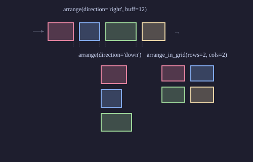
- distribute(direction='right', buff=0, start=0)¶
Distribute children evenly across the group’s bounding box.
- stagger(method_name, start=0, end=1, overlap=0.5, **kwargs)¶
Call an animation method on children with overlapping timing.
overlap: 0 = sequential, 1 = all simultaneous.Example: Staggered animation across children
group.stagger('fadein', start=0, end=1, overlap=0.5)
Example: stagger
Staggered fade-in across children.
"""Stagger fadein animation.""" from vectormation.objects import * v = VectorMathAnim() v.set_background() dots = VCollection(*[Dot(cx=200 + i * 80, cy=540, r=15, fill=['#E74C3C', '#E67E22', '#F1C40F', '#2ECC71', '#1ABC9C', '#3498DB', '#9B59B6', '#E91E63', '#E74C3C', '#E67E22', '#F1C40F', '#2ECC71', '#1ABC9C', '#3498DB', '#9B59B6', '#E91E63'][i]) for i in range(16)]) dots.center_to_pos() dots.stagger('fadein', start=0, end=2, overlap=0.5) v.add(dots) v.show(end=3)
Example: ref_stagger
"""Stagger method: staggered animation across children.""" from vectormation.objects import * v = VectorMathAnim() v.set_background() squares = VCollection(*[ Rectangle(60, 60, fill=['#E74C3C', '#E67E22', '#F1C40F', '#2ECC71', '#3498DB', '#9B59B6', '#E91E63', '#1ABC9C'][i], fill_opacity=0.9) for i in range(8) ]) squares.arrange(direction='right', buff=20) squares.center_to_pos() squares.stagger('rotate_by', start=0.3, end=2.5, overlap=0.5, degrees=360) v.add(squares) v.show(end=3)
Measurement
- bbox(time, start_idx=0, end_idx=None)¶
Bounding box (optionally for a sub-range of children).
- brect(time, start_idx=0, end_idx=None, rx=0, ry=0, buff=14, follow=True)¶
Bounding rectangle. Returns a
Rectangle.
Positioning
- move_to(x, y, start=0, end=None, easing=smooth)¶
Move the group’s centre to
(x, y).
- rotate_by(start, end, degrees, cx=None, cy=None, easing=smooth)¶
Rotate all children by degrees around the group’s centre.
- rotate_to(start, end, degrees, cx=None, cy=None, easing=smooth)¶
Rotate all children to an absolute angle.
Layout (additional)
- arrange_in_grid(rows=None, cols=None, buff=14, start=0)¶
Lay out children in a grid of rows x cols.
- animated_arrange(direction='right', buff=14, start=0, end=1)¶
Animated version of
arrange(): children slide to arranged positions.
- animated_arrange_in_grid(rows=None, cols=None, buff=14, start=0, end=1)¶
Animated version of
arrange_in_grid().
- space_evenly(direction='right', total_span=None, start=0)¶
Space children evenly along an axis.
- spread(x1, y1, x2, y2, start=0)¶
Distribute children evenly between two points.
Example: spread
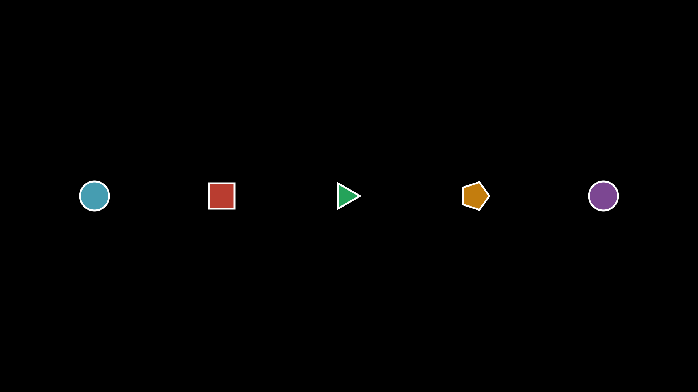
"""VCollection.spread() distributing shapes between two points.""" from vectormation.objects import * v = VectorMathAnim() v.set_background() group = VCollection( Circle(r=40, fill='#58C4DD', fill_opacity=0.8), Rectangle(70, 70, fill='#E74C3C', fill_opacity=0.8), RegularPolygon(3, radius=40, fill='#2ECC71', fill_opacity=0.8), RegularPolygon(5, radius=40, fill='#F39C12', fill_opacity=0.8), Circle(r=40, fill='#9B59B6', fill_opacity=0.8), ) group.spread(260, 540, 1660, 540) v.add(group) v.show(end=0)
- align_submobjects(edge='left', start=0)¶
Align all children’s edges.
Animation
- write(start, end, processing=10, max_stroke_width=2, change_existence=True)¶
Staggered write animation across all children.
Example: write (collection)
"""VCollection.write: staggered write animation across children.""" from vectormation.objects import * v = VectorMathAnim() v.set_background() shapes = VCollection( Circle(r=60, stroke='#E74C3C', fill='#E74C3C', fill_opacity=0.6), Rectangle(110, 110, stroke='#3498DB', fill='#3498DB', fill_opacity=0.6), RegularPolygon(6, radius=60, stroke='#2ECC71', fill='#2ECC71', fill_opacity=0.6), ) shapes.arrange(direction='right', buff=60) shapes.center_to_pos() shapes.write(start=0.2, end=2.5) v.add(shapes) v.show(end=3)
- stagger_fadein_sorted(start=0, end=1, direction='left_to_right', easing=smooth)¶
Fade in children based on spatial ordering. Directions:
'left_to_right','top_to_bottom','center_out'.
- swap_children(i, j, start=0, end=1, easing=smooth)¶
Animate swapping positions of children i and j using arc paths.
Example: swap_children
"""VCollection.swap_children() animating two shapes swapping positions.""" from vectormation.objects import * v = VectorMathAnim() v.set_background() group = VCollection( Circle(r=50, fill='#58C4DD', fill_opacity=0.8), Rectangle(90, 90, fill='#E74C3C', fill_opacity=0.8), RegularPolygon(3, radius=50, fill='#2ECC71', fill_opacity=0.8), ) group.arrange(direction='right', buff=80) group.center_to_pos() group.swap_children(0, 2, start=0.5, end=2) v.add(group) v.show(end=2.5)
- shuffle_animate(start=0, end=1)¶
Animated random shuffle of children.
Example: shuffle_animate
"""VCollection.shuffle_animate() randomly shuffling shape positions.""" from vectormation.objects import * v = VectorMathAnim() v.set_background() colors = ['#58C4DD', '#E74C3C', '#2ECC71', '#F39C12', '#9B59B6'] group = VCollection( *[Circle(r=40, fill=c, fill_opacity=0.8) for c in colors] ) group.arrange(direction='right', buff=40) group.center_to_pos() group.shuffle_animate(start=0.5, end=2) v.add(group) v.show(end=2.5)
- reveal(start=0, end=1, direction='left', easing=smooth)¶
Staggered reveal of children sliding into view.
Example: reveal
"""VCollection.reveal: staggered reveal of children sliding into view.""" from vectormation.objects import * v = VectorMathAnim() v.set_background() items = VCollection(*[ Text(word, font_size=48, fill='#fff') for word in ['Hello', 'World', 'From', 'VectorMation'] ]) items.arrange(direction='right', buff=30) items.center_to_pos() items.reveal(start=0, end=2, direction='left') v.add(items) v.show(end=2.5)
- stagger_fadein(start=0, end=1, shift_dir=None, shift_amount=50, overlap=0.5, easing=smooth)¶
Staggered fade-in of children with optional directional shift.
Example: stagger_fadein
"""VCollection.stagger_fadein: staggered fade-in with directional shift.""" from vectormation.objects import * v = VectorMathAnim() v.set_background() shapes = VCollection( Circle(r=50, fill='#E74C3C', fill_opacity=0.8), Rectangle(90, 90, fill='#3498DB', fill_opacity=0.8), RegularPolygon(3, radius=50, fill='#2ECC71', fill_opacity=0.8), RegularPolygon(5, radius=50, fill='#F39C12', fill_opacity=0.8), Circle(r=50, fill='#9B59B6', fill_opacity=0.8), ) shapes.arrange(direction='right', buff=40) shapes.center_to_pos() shapes.stagger_fadein(start=0, end=2, shift_dir=UP, shift_amount=60, overlap=0.4) v.add(shapes) v.show(end=2.5)
- wave_anim(start=0, end=1, amplitude=20, waves=1)¶
Wave animation through children.
Example: wave_anim
"""VCollection.wave_anim: wave animation through children.""" from vectormation.objects import * v = VectorMathAnim() v.set_background() dots = VCollection(*[ Dot(r=18, fill=['#E74C3C', '#E67E22', '#F1C40F', '#2ECC71', '#3498DB', '#9B59B6', '#E91E63', '#1ABC9C', '#E74C3C', '#E67E22', '#F1C40F', '#2ECC71'][i]) for i in range(12) ]) dots.arrange(direction='right', buff=30) dots.center_to_pos() dots.wave_anim(start=0, end=3, amplitude=60, n_waves=2) v.add(dots) v.show(end=3)
- highlight_child(index, start=0, end=1, dim_opacity=0.2, easing=smooth)¶
Emphasize child at index by dimming all others.
- wave_effect(start=0, end=1, amplitude=20, axis='y', easing=smooth)¶
Wave displacement through children.
- stagger_along_path(method_name, path_d, start=0, end=1, **kwargs)¶
Stagger method calls along an SVG path.
- stagger_random(method_name, start=0, end=1, seed=None, **kwargs)¶
Stagger method calls with random timing.
- label_children(labels, direction=UP, buff=20, font_size=None, creation=0)¶
Add text labels above (or beside) each child.
Filtering & Iteration
- filter(func)¶
Return a new VCollection with only children where
func(child)is true.
- partition(func)¶
Split into two VCollections based on a predicate.
- for_each(func)¶
Apply func to each child. Returns self.
- sort_children(key, reverse=False)¶
Sort children by a key function.
- sort_objects(key=None, reverse=False, time=0)¶
Sort children in-place. Default key: x position.
- shuffle()¶
Randomly shuffle children order.
- rotate_children(degrees=90, start=0, end=None, easing=smooth)¶
Rotate all children around the group’s centre.
Color
- set_color_by_gradient(colors, start=0)¶
Assign a gradient of colours across children.
- set_opacity_by_gradient(start_opacity, end_opacity, start=0)¶
Assign a gradient of opacities across children.
Advanced
- distribute_along_arc(cx=960, cy=540, radius=300, start_angle=0, end_angle=360, start=0)¶
Place children along an arc.
- distribute_radial(cx=None, cy=None, radius=200, start_angle=0, start=0, end=None, easing=smooth)¶
Arrange children in a circle around (cx, cy). Defaults to group center. With end, animates.
Example: distribute_radial
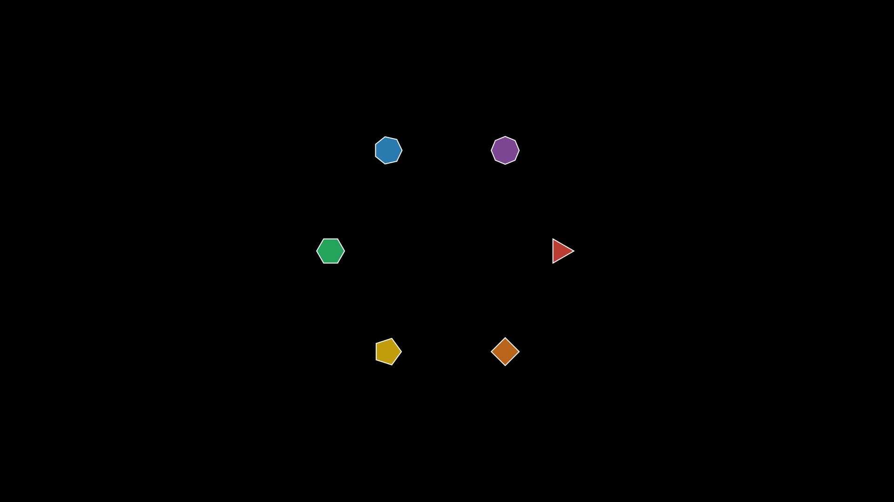
"""VCollection.distribute_radial: arrange children in a circle.""" from vectormation.objects import * v = VectorMathAnim() v.set_background() group = VCollection(*[ RegularPolygon(n, radius=30, fill=['#E74C3C', '#E67E22', '#F1C40F', '#2ECC71', '#3498DB', '#9B59B6'][i], fill_opacity=0.8, stroke='#fff', stroke_width=2) for i, n in enumerate([3, 4, 5, 6, 7, 8]) ]) group.distribute_radial(cx=960, cy=540, radius=250) v.add(group) v.show(end=0)
- stagger_scale(start=0, end=1, scale_factor=1.5, delay=0.2, easing=smooth)¶
Scale each child up then back down with stagger delay (popping wave).
- connect_children(arrow=False, buff=0, start=0, **kwargs)¶
Draw connecting lines (or arrows) between consecutive children.
- batch_animate(method_name, args_list, start=0, delay=0.1)¶
Call a method on each child with per-child arguments.
{kind=link}
MorphObject¶
- class MorphObject(morph_from, morph_to, start=0, end=1, easing=smooth, change_existence=True, rotation_degrees=0)¶
Bases:
VCollectionSmoothly morph one shape (or collection) into another.
- Parameters:
morph_from – Source shape.
morph_to – Target shape.
start (float) – Start time.
end (float) – End time.
rotation_degrees (float) – Spiral morph rotation (0 = straight morph).
Example: MorphObject
"""MorphObject morphing a circle into a square.""" from vectormation.objects import * v = VectorMathAnim() v.set_background() circle = Circle(r=120, fill='#58C4DD', fill_opacity=0.8, stroke='#58C4DD') square = Rectangle(240, 240, fill='#E74C3C', fill_opacity=0.8, stroke='#E74C3C') morph = MorphObject(circle, square, start=0.5, end=2.5) v.add(morph) v.show(end=3)
Example: MorphObject (collection to collection)
"""MorphObject: star morphing into a circle with rotation.""" from vectormation.objects import * v = VectorMathAnim() v.set_background() star = Star(5, outer_radius=140, inner_radius=60, fill='#F1C40F', fill_opacity=0.9, stroke='#F1C40F') circle = Circle(r=120, fill='#9B59B6', fill_opacity=0.9, stroke='#9B59B6') morph = MorphObject(star, circle, start=0.3, end=2.3, rotation_degrees=180) v.add(morph) v.show(end=3)
Example: MorphObject with scale
"""Spring-like scale with overshoot.""" from vectormation.objects import * v = VectorMathAnim() v.set_background() c = RegularPolygon(6, radius=70, fill='#F39C12', fill_opacity=0.8) c.fadein(start=0, end=0.3) c.morph_scale(target_scale=1.8, start=0.3, end=2, overshoot=0.4, oscillations=3) v.add(c) v.show(end=2.5)
LabeledDot¶
Arrows¶
Arrow¶
{kind=link}
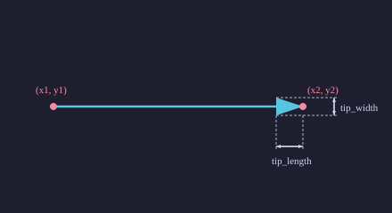
- class Arrow(x1=0, y1=0, x2=100, y2=100, tip_length=47, tip_width=47, **styling)¶
Bases:
VCollectionLine with a triangular arrowhead.
- Parameters:
x1 (float) – Start x.
y1 (float) – Start y.
x2 (float) – End x.
y2 (float) – End y.
tip_length (float) – Arrowhead length.
tip_width (float) – Arrowhead width.
Example: Arrow
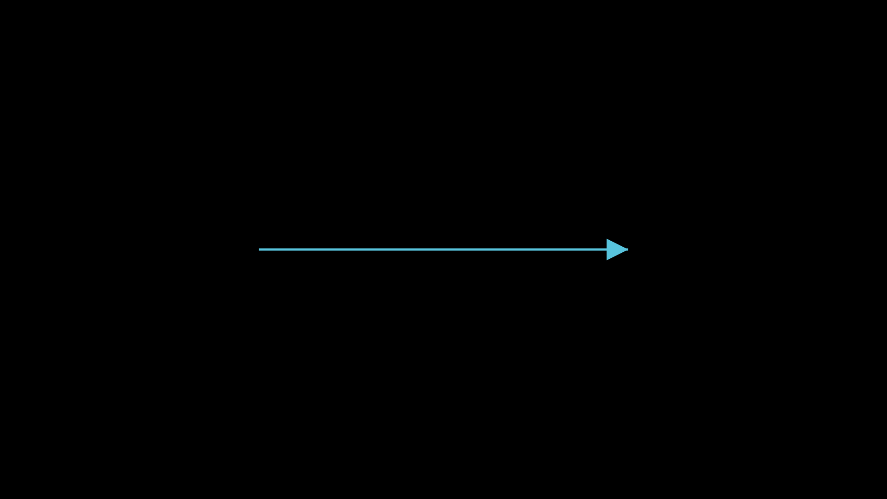
"""Arrow between two points.""" from vectormation.objects import * v = VectorMathAnim() v.set_background() arrow = Arrow(x1=560, y1=540, x2=1360, y2=540, stroke='#58C4DD', fill='#58C4DD') v.add(arrow) v.show(end=0)
Vector¶
- class Vector(x=100, y=0, origin_x=960, origin_y=540, **styling)¶
Bases:
ArrowArrow originating from a point (default: canvas origin). Commonly used in coordinate systems to represent mathematical vectors.
- Parameters:
x (float) – Horizontal component (pixels from origin).
y (float) – Vertical component (pixels from origin).
origin_x (float) – Starting x position (default
960).origin_y (float) – Starting y position (default
540).
- get_vector(time=0)¶
Return the vector components
(dx, dy)from start to end.
Example: Creating a vector on axes
from vectormation.objects import * axes = Axes(x_range=(-3, 3), y_range=(-3, 3)) v = Vector(x=2 * 135, y=-1 * 135) # 2 units right, 1 unit down v.fadein(0, 1)
Example: Vector on Axes
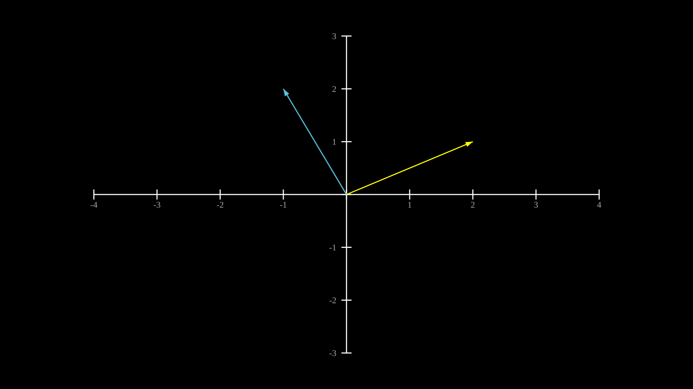
"""Axes.add_vector: draw a vector on axes.""" from vectormation.objects import * v = VectorMathAnim() v.set_background() axes = Axes(x_range=(-4, 4), y_range=(-3, 3)) axes.add_coordinates() axes.add_vector(2, 1, stroke='#FFFF00', fill='#FFFF00') axes.add_vector(-1, 2, stroke='#58C4DD', fill='#58C4DD') v.add(axes) v.show(end=0)
DoubleArrow¶
- class DoubleArrow(x1=0, y1=0, x2=100, y2=100, tip_length=47, tip_width=47, **styling)¶
Bases:
ArrowArrow with heads on both ends.
Example: DoubleArrow
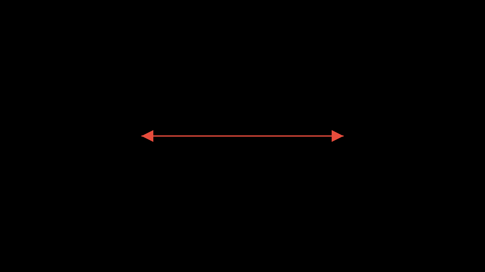
"""DoubleArrow with heads on both ends.""" from vectormation.objects import * v = VectorMathAnim() v.set_background() darrow = DoubleArrow(x1=560, y1=540, x2=1360, y2=540, stroke='#E74C3C', fill='#E74C3C') v.add(darrow) v.show(end=0)
CurvedArrow¶
{kind=link}
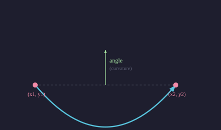
- class CurvedArrow(x1=0, y1=0, x2=100, y2=100, angle=0.4, tip_length=47, tip_width=47, **styling)¶
Bases:
VCollectionArrow with a quadratic Bezier curve shaft.
- Parameters:
angle (float) – Curvature angle.
Example: CurvedArrow
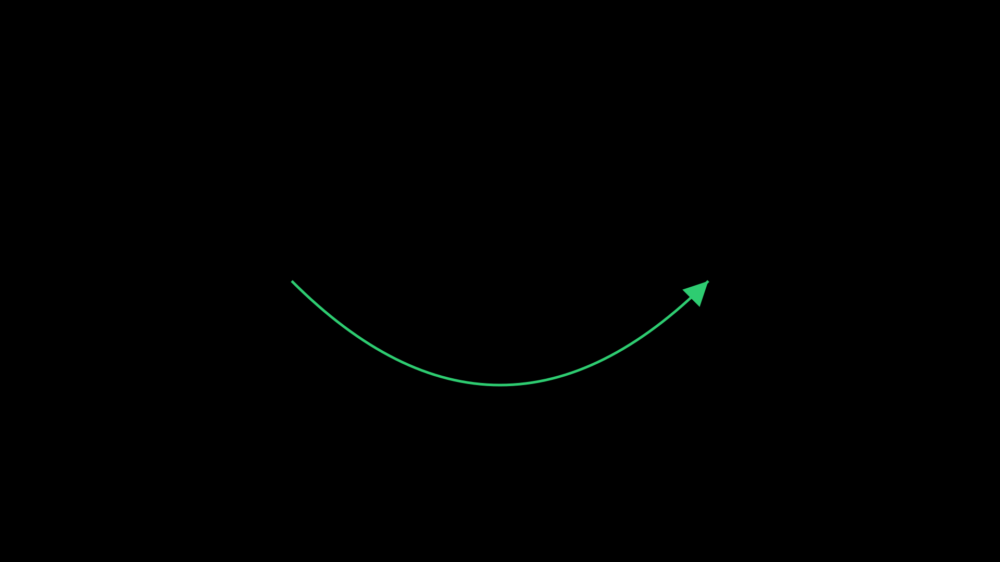
"""CurvedArrow with a bezier curve shaft.""" from vectormation.objects import * v = VectorMathAnim() v.set_background() carrow = CurvedArrow(x1=560, y1=540, x2=1360, y2=540, angle=0.5, stroke='#2ECC71', fill='#2ECC71') v.add(carrow) v.show(end=0)
Brace¶
{kind=link}
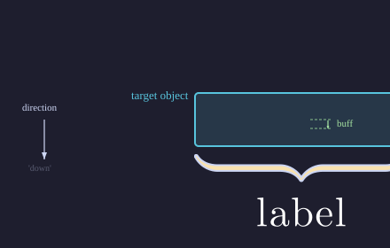
- class Brace(target, direction='down', label=None, buff=14, depth=18, **styling)¶
Bases:
VCollectionCurly brace annotation around a target object.
- Parameters:
target – The object to annotate.
direction (str) –
'up','down','left', or'right'.label (str) – Optional text label.
buff (float) – Distance from target.
depth (float) – Brace depth.
- classmethod for_range(axes, axis, start_val, end_val, direction=None, label=None, **kwargs)¶
Create a Brace spanning a range on an Axes object.
- Parameters:
axes – The Axes object.
axis (str) –
'x'or'y'.start_val (float) – Start of the range.
end_val (float) – End of the range.
Example: Brace
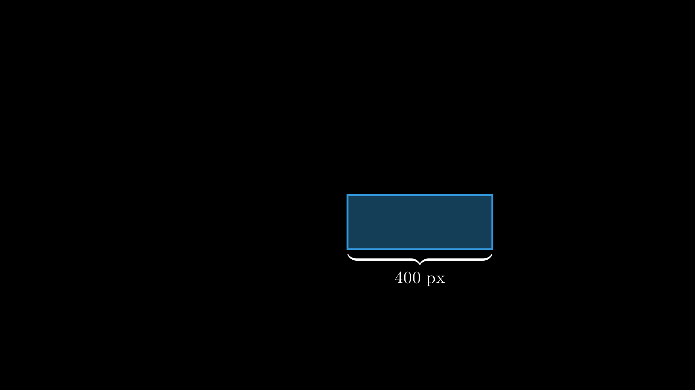
"""Brace annotation around a rectangle.""" from vectormation.objects import * v = VectorMathAnim() v.set_background() rect = Rectangle(400, 150, fill='#3498DB', fill_opacity=0.4, stroke='#3498DB') brace = Brace(rect, direction='down', label='400 px', stroke='#F39C12') v.add(rect, brace) v.show(end=0)
BraceBetweenPoints¶
- class BraceBetweenPoints(x1, y1, x2, y2, label=None, buff=14, depth=18, **styling)¶
Bases:
BraceCurly brace between two arbitrary points. The brace spans the line segment from
(x1, y1)to(x2, y2), with the tip pointing perpendicular to the segment.- Parameters:
x1 (float) – Start x-coordinate.
y1 (float) – Start y-coordinate.
x2 (float) – End x-coordinate.
y2 (float) – End y-coordinate.
label (str) – Optional text label.
buff (float) – Distance from segment.
depth (float) – Brace depth.
Example: Brace spanning two points
brace = BraceBetweenPoints(300, 400, 800, 400, label='500px')
LabeledLine¶
- class LabeledLine(x1, y1, x2, y2, label='', **styling)
Bases:
VCollectionA line with a text label positioned at its midpoint.
Example: LabeledLine

"""LabeledLine with midpoint text.""" from vectormation.objects import * v = VectorMathAnim() v.set_background() ll = LabeledLine(x1=660, y1=540, x2=1260, y2=540, label='600 px', stroke='#58C4DD') v.add(ll) v.show(end=0)
LabeledArrow¶
- class LabeledArrow(x1, y1, x2, y2, label='', **styling)
Bases:
VCollectionAn arrow with a text label positioned at its midpoint.
Example: LabeledArrow

"""LabeledArrow with midpoint text.""" from vectormation.objects import * v = VectorMathAnim() v.set_background() la = LabeledArrow(x1=660, y1=540, x2=1260, y2=540, label='direction', stroke='#E74C3C') v.add(la) v.show(end=0)
Data Structures¶
Array¶
- class Array(values, x=360, y=440, cell_width=80, cell_height=60, font_size=24, show_indices=True, **styling)¶
Bases:
VCollectionArray visualization with cells, index labels, and animation methods.
- highlight_cell(index, start=0, end=1, color='#58C4DD', easing=there_and_back)¶
Flash-highlight a cell by index.
- swap_cells(i, j, start=0, end=1, easing=smooth)¶
Animate swapping the values at indices i and j.
- set_value(index, value, start=0, end=0.5)¶
Animate changing a cell’s displayed value.
- sort(start=0, end=2, easing=smooth, delay=0.15)¶
Animate a bubble sort, staggering swaps over
[start, end].
- reverse(start=0, end=2, easing=smooth, delay=0.15)¶
Animate reversing the array by swapping from outside in.
- add_pointer(index, label='', color='#FF6B6B', creation=0)¶
Add a pointer arrow above a cell.
Example: Array
Array highlight and swap operations.
"""Array highlight and swap.""" from vectormation.objects import * v = VectorMathAnim() v.set_background() arr = Array([5, 3, 8, 1, 9, 2]) arr.center_to_pos() arr.fadein(start=0, end=0.5) arr.highlight_cell(2, start=1, end=2, color='#58C4DD') arr.swap_cells(0, 4, start=2.5, end=3.5) v.add(arr) v.show(end=4)
Stack¶
- class Stack(values=None, x=860, y=600, cell_width=100, cell_height=50, **styling)¶
Bases:
VCollectionVisual stack (LIFO) with push/pop animations.
- push(value, start=0, end=0.5)¶
Animate pushing a value onto the stack.
- pop(start=0, end=0.5)¶
Animate popping the top value.
- peek()¶
Return the top value without removing it.
Queue¶
- class Queue(values=None, x=360, y=440, cell_width=80, cell_height=60, **styling)¶
Bases:
VCollectionVisual queue (FIFO) with enqueue/dequeue animations.
- enqueue(value, start=0, end=0.5)¶
Animate adding a value to the back.
- dequeue(start=0, end=0.5)¶
Animate removing the front value.
LinkedList¶
- class LinkedList(values, x=200, y=440, node_width=80, node_height=50, gap=40, font_size=22, fill='#1e1e2e', text_color='#fff', border_color='#58C4DD', arrow_color='#fff')¶
Bases:
VCollectionVisual singly linked list with node and arrow animations.
- Parameters:
values (list) – Initial node values (required).
node_width (float) – Width of each node box.
node_height (float) – Height of each node box.
gap (float) – Horizontal gap between nodes.
- append_node(value, start=0, end=0.5)¶
Animate appending a new node at the end of the list.
- remove_node(index, start=0, end=0.5)¶
Animate removing the node at index.
- highlight_node(index, start=0, end=1, color='#FF6B6B')¶
Flash-highlight a node by index.
ArrayViz¶
- class ArrayViz(values, cell_size=80, x=None, y=None, colors=None, default_fill='#264653', show_indices=True, font_size=32, **styling)¶
Bases:
VCollectionVisualise an array as a row of labeled cells. Supports animated swaps, highlights, and value changes.
- Parameters:
values (list) – Initial values to display.
cell_size (float) – Width and height of each cell.
- highlight(index, color='#E9C46A', start=0, end=0.5)¶
Temporarily highlight a cell.
- swap(i, j, start=0, end=0.5)¶
Animate swapping two cells.
- set_value(index, value, start=0, end=0.5)¶
Animate changing a cell’s value.
- pointer(index, label='', start=0, color='#FC6255')¶
Add a labelled pointer arrow above a cell.
LinkedListViz¶
- class LinkedListViz(values, cell_width=80, cell_height=50, x=None, y=None, **styling)¶
Bases:
VCollectionVisualise a singly linked list with boxes and arrows.
- Parameters:
values (list) – Initial node values.
- highlight(index, color='#E9C46A', start=0, end=0.5)¶
Temporarily highlight a node.
- traverse(start=0, delay=0.3, color='#E9C46A')¶
Animate traversal through all nodes sequentially.
StackViz¶
- class StackViz(values, cell_width=120, cell_height=50, x=None, y=None, **styling)¶
Bases:
VCollectionVisualise a stack (LIFO) as vertically stacked cells with a TOP pointer.
- Parameters:
values (list) – Initial values (bottom to top).
- push(value, start=0, end=0.5)¶
Animate pushing a value onto the stack.
- pop(start=0, end=0.5)¶
Animate popping the top value.
QueueViz¶
- class QueueViz(values, cell_width=80, cell_height=60, x=None, y=None, **styling)¶
Bases:
VCollectionVisualise a queue (FIFO) as a horizontal row of cells with FRONT/BACK labels.
- Parameters:
values (list) – Initial values (front on the left).
- enqueue(value, start=0, end=0.5)¶
Animate adding a value to the back of the queue.
- dequeue(start=0, end=0.5)¶
Animate removing the front value.
- highlight(index, color='#E9C46A', start=0, end=0.5)¶
Temporarily highlight a cell.
BinaryTree¶
- class BinaryTree(tree, x=960, y=120, h_spacing=200, v_spacing=100, **styling)¶
Bases:
VCollectionVisual binary tree with automatic layout.
- Parameters:
tree (tuple) – Nested tuple
(value, left_subtree, right_subtree).
- highlight_node(index, color='#E9C46A', start=0, end=0.5)¶
Temporarily highlight a node by depth-first index.
Table¶
- class Table(data, row_labels=None, col_labels=None, x=120, y=60, cell_width=160, cell_height=60, font_size=24, **styling)¶
Bases:
VCollectionTabular data display with optional row/column labels.
- Parameters:
data (list) – 2D list of values
data[row][col].
- get_entry(row, col)¶
Return the Text object at
(row, col).
- get_row(row)¶
Return a VCollection of all Text objects in a row.
- get_column(col)¶
Return a VCollection of all Text objects in a column.
- highlight_cell(row, col, start=0, end=1, color='#FFFF00')¶
Flash-highlight a single cell.
- highlight_row(row_idx, start=0, end=1, color='#FFFF00', opacity=0.3)¶
Highlight all cells in a row.
Example: Table
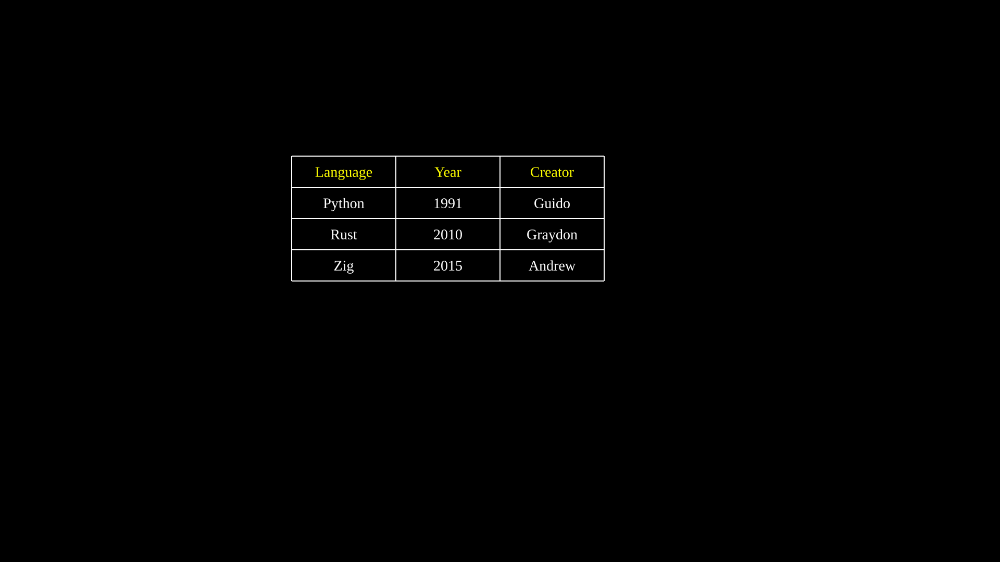
"""Table with row and column labels.""" from vectormation.objects import * v = VectorMathAnim() v.set_background() table = Table( data=[ ['Python', '1991', 'Guido'], ['Rust', '2010', 'Graydon'], ['Zig', '2015', 'Andrew'], ], col_labels=['Language', 'Year', 'Creator'], x=560, y=300, cell_width=200, cell_height=60, font_size=28, ) v.add(table) v.show(end=0)
Matrix¶
- class Matrix(data, x=960, y=540, font_size=36, h_spacing=80, v_spacing=50, **styling)¶
Bases:
VCollectionMathematical matrix with bracket delimiters.
- Parameters:
data (list) – 2D list of values.
- get_entry(row, col)¶
Return the Text object at
(row, col).
- get_row(row)¶
Return a VCollection of all entries in a row.
- get_column(col)¶
Return a VCollection of all entries in a column.
- highlight_row(row, start=0, end=1, color='#FFD700')¶
Flash-highlight all entries in a row.
- highlight_column(col, start=0, end=1, color='#FFD700')¶
Flash-highlight all entries in a column.
Example: Matrix
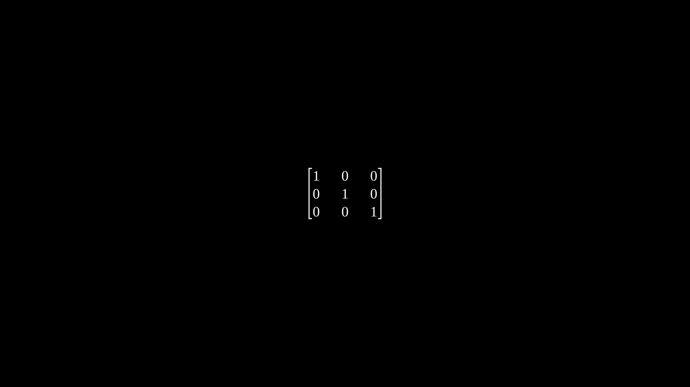
"""Matrix with bracket delimiters.""" from vectormation.objects import * v = VectorMathAnim() v.set_background() matrix = Matrix( data=[ [1, 0, 0], [0, 1, 0], [0, 0, 1], ], font_size=40, ) v.add(matrix) v.show(end=0)
DecimalMatrix¶
- class DecimalMatrix(data, decimals=1, **kwargs)¶
Bases:
MatrixMatrix that formats entries as decimals with a fixed number of places.
- Parameters:
data (list) – 2D list of numeric values.
decimals (int) – Number of decimal places (default
1).
Example: Matrix with fixed decimal places
m = DecimalMatrix([[1.234, 5.678], [9.012, 3.456]], decimals=2)
IntegerMatrix¶
Code¶
- class Code(text, language='python', x=100, y=80, font_size=24, **styling)¶
Bases:
VCollectionSyntax-highlighted code display.
- Parameters:
text (str) – Source code string.
language (str) – Programming language for highlighting.
- highlight_lines(line_numbers, color='#FFFF00', opacity=0.3, start=0, end=1)¶
Highlight specific line numbers with a background colour.
- reveal_lines(start=0, end=1, overlap=0.5)¶
Reveal code lines sequentially with staggered fadein.
Title¶
- class Title(text, **styling)¶
Bases:
VCollectionCentered title text at the top of the canvas with an underline.
Variable¶
- class Variable(label, value=0, fmt='{:.2f}', x=960, y=540, font_size=48, **styling)¶
Bases:
VCollectionA labelled numeric value display (e.g.
x = 3.14).- set_value(val, start=0)¶
Set the value instantly.
- animate_value(target, start, end, easing=smooth)¶
Animate to a target value.
- tracker¶
The underlying Real attribute for the displayed value.
DynamicObject¶
- class DynamicObject(func, creation=0, z=0)¶
Bases:
VObjectVObject whose SVG is regenerated every frame by calling
func(time). The function should return a VObject.Example: Rebuilding SVG every frame
def my_clock(time): angle = time * 360 hand = Line(960, 540, 960 + 100 * math.cos(math.radians(angle)), 540 + 100 * math.sin(math.radians(angle))) return hand clock = DynamicObject(my_clock)
- always_redraw(func, creation=0, z=0)¶
Convenience wrapper: create a
DynamicObjectfrom a callable.func(time)should return a VObject.Example: Line that follows a moving dot
dot = Dot() dot.shift(dx=200, start=0, end=2) line = always_redraw(lambda t: Line(960, 540, *dot.center(t)))
See also
Additional VCollection-based classes are documented in their dedicated reference pages:
Graphing — Axes, Graph, NumberPlane, ComplexPlane, PolarAxes, NumberLine
Charts — PieChart, BarChart, DonutChart, RadarChart, Legend, ProgressBar, and more
Diagrams — NetworkGraph, FlowChart, Tree, Automaton, and more
UI Components — Label, Callout, DimensionLine, Tooltip, Code, Title, Variable, and more
Science — NeuralNetwork, Pendulum, StandingWave, Molecule2D, Lens, Ray